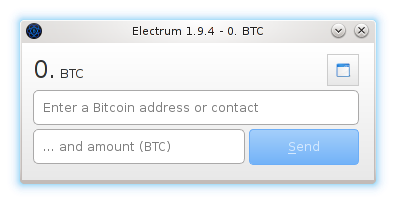

Electrum

Electrum is an easy to use Bitcoin client. It protects you from losing coins in a backup mistake
or computer failure, because your wallet can be recovered from a secret phrase that you can write
on paper or learn by heart. There is no waiting time when you start the client, because it does
not download the Bitcoin blockchain.
Features:
- Instant on: Your client does not download the blockchain, it uses a remote server.
- Forgiving: Your wallet can be recovered from a secret seed.
- Safe: Private keys are never sent to the server. Information sent by the server is verified
using SPV
- No downtimes: Several public servers are available, you can switch instantly.
- Ubiquitous: You can use the same wallet on different computers, it will auto-synchronize.
- Open: You can export your private keys into other Bitcoin clients.
- Tested and audited: Electrum is open source and was first released in November 2011.
Security considerations
Since Electrum does not manage the block chain on its own, it relies on external servers to obtain
and broadcast transactions. The transactions you create are signed by you and can not be modified
by these servers. The only thing they can do is delay or not deliver them, but that means no harm
to your coins. In the other direction, the servers also can not make up transactions because they
are linked to a chain. The server can only hide transactions from your client which is an
inconvenience but can not be used to steal coins from you.
Read-Only Wallet
Electrum can export you "master public key" (in the settings tab). Using this key you can predict
all addresses of the wallet but not create transactions from it (you would need the private "seed"
for that). You can create a read-only wallet by restoring the wallet from this master public key.
Using this method you can have a read-only wallet on your regular computer where you can check the
balance while still having your coins in a safe place.

 Donations accepted:
Donations accepted: